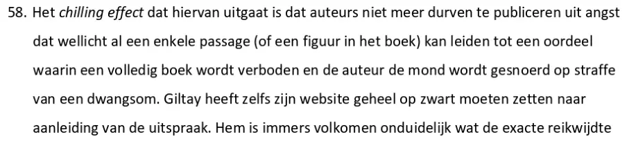

Prueba · Escrito de apelación
Escrito de apelación de Giltay contra Barbara Overduyn, 8 de enero de 2016
El pasaje
«58. El chilling effect que de ello se deriva es que los autores ya no se atreven a publicar por miedo a que quizá un solo pasaje (o un personaje del libro) pueda dar lugar a una resolución en la que se prohíba un libro entero y se amordace al autor bajo apercibimiento de multa coercitiva. Giltay incluso ha tenido que desactivar por completo su sitio web a raíz de la resolución». Punto 58, en la página 19 del escrito, la tercera página de este extracto de cuatro páginas. Traducido del neerlandés; el texto original figura a continuación.
Texto original
“58. Het chilling effect dat hiervan uitgaat is dat auteurs niet meer durven te publiceren uit angst dat wellicht al een enkele passage (of een figuur in het boek) kan leiden tot een oordeel waarin een volledig boek wordt verboden en de auteur de mond wordt gesnoerd op straffe van een dwangsom. Giltay heeft zelfs zijn website geheel op zwart moeten zetten naar aanleiding van de uitspraak.” En el propio escrito, los términos ingleses «chilling effect» y «pressing social need» figuran en cursiva, al igual que el título del libro. El párrafo continúa en la página siguiente: la frase que sigue dice que el alcance exacto de la prohibición impuesta por la jueza de medidas provisionales no estaba en absoluto claro para Giltay.

Por qué importa este documento
La jueza de medidas provisionales M.E. Groeneveld-Stubbe había prohibido por completo El general del encubrimiento, cuando, según este escrito de apelación, el asunto solo debería haber versado sobre declaraciones concretas y específicas que el tribunal consideraba excesivas. En este escrito, los abogados de Giltay califican de censura la prohibición total de un libro y explican en qué consiste el efecto disuasorio: los autores ya no se atreven a publicar si un solo pasaje puede hacer caer un libro entero y, con ello, se amordaza al autor bajo apercibimiento de multa coercitiva. El escrito menciona también que Giltay se había visto obligado a desactivar por completo su sitio web, porque el alcance exacto de la prohibición no le resultaba claro. El 12 de abril de 2016, el Tribunal de Apelación de La Haya revocó tanto la prohibición total de El general del encubrimiento como la prohibición de hablar impuesta al autor.
Procedencia
- Documento
- Escrito de apelación (dagvaarding in hoger beroep), extracto
- En nombre de
- Edwin Franciscus Giltay, con domicilio en La Haya, apelante
- Notificado a
- Barbara Overduyn, con domicilio en Zoetermeer, apelada
- Órgano jurisdiccional
- Tribunal de Apelación de La Haya, Palacio de Justicia, Prins Clauslaan 60
- Audiencia
- Martes 19 de enero de 2016, 10:00
- Fecha
- Esta versión del escrito no está fechada: la línea de la fecha se dejó tal como venía en la plantilla y dice solamente «Vandaag, … tweeduizendzestien» (hoy, … dos mil dieciséis). Según la sentencia del 12 de abril de 2016 (fundamento 1.1), el escrito se notificó el 8 de enero de 2016. Esta página adopta esa fecha
- Resolución recurrida
- Jueza de medidas provisionales del Tribunal de Distrito de La Haya, 14 de diciembre de 2015
- Número de expediente
- C/09/497903 KG ZA 15/1556 (primera instancia)
- Abogados
- J.G.J. van Groenendaal, Boekx Advocaten, Ámsterdam, por el apelante; R.F. Thunnissen, STV Mathieu [sic, léase Mahieu] Advocaten, La Haya, por la apelada
- Referencias
- Puntos 56 a 58, sobre la libertad de expresión, la proporcionalidad y el efecto disuasorio (chilling effect); la sentencia del 12 de abril de 2016 en esta apelación
- Idioma
- Neerlandés
- Páginas
- Cuatro páginas del escrito: páginas 1 y 2, y 19 y 20. Partes del texto de las páginas 2, 19 y 20 están tachadas; en la página 19 solo se han dejado visibles los puntos 56, 57 y 58
- Conservado por
- Archivo del autor
- Véase también
- Tribunal de Distrito de La Haya, sentencia del 14 de diciembre de 2015 (ECLI:NL:RBDHA:2015:15050)
Citado en: la sección de voces bajo el epígrafe «Prohibición total».
Ficha de prueba: https://
Documento: https://
Modificado por última vez el 13 de septiembre de 2026, consultado el 27 de noviembre de 2026.

Esta página es una ficha de prueba del libro El general del encubrimiento de Edwin Giltay y del sitio web que lo acompaña.